INCENTER
الشركاء: AAE DESIGN & Centre Mixte Agadir
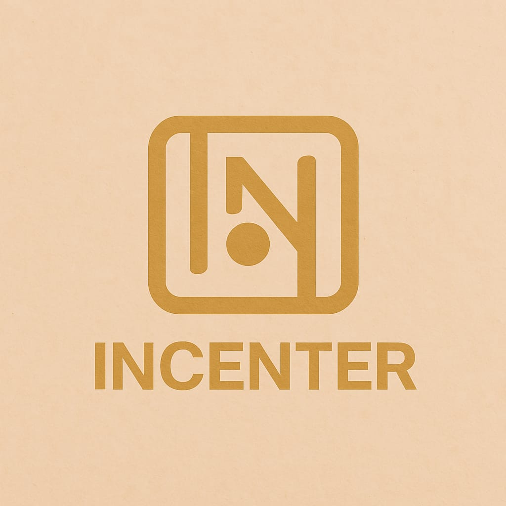
الشركاء: AAE DESIGN & Centre Mixte Agadir
الوظيفة الحالية: منصة مركزية لعرض المستجدات، استطلاع الآراء بذكاء (Google Forms)، وعرض المشاريع التقنية بأسلوب بصري احترافي يعتمد على "الشفافية والوضوح
التمكين: تعطي للمتدربين شعوراً بأن مشاريعهم تُعرض في واجهة عالمية المستوى.
المشاركة: تحويل المتدرب من متلقٍ للمعلومة إلى صانع قرار من خلال قسم "اقتراح الأفكار"
الهوية: خلق فخر بالانتماء للمركز عبر تصميم يدمج بين شعار المركز وشعار AAE DESIGN كعلامة جودة.
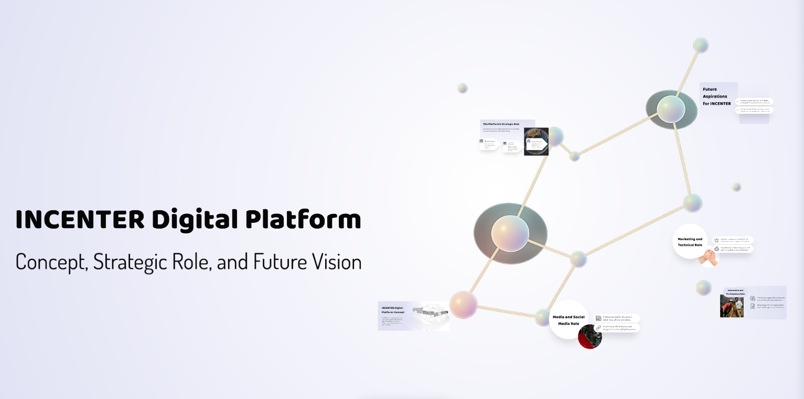
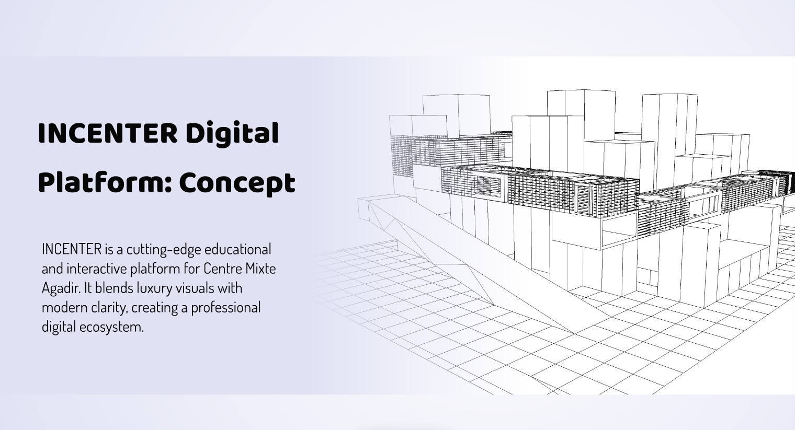
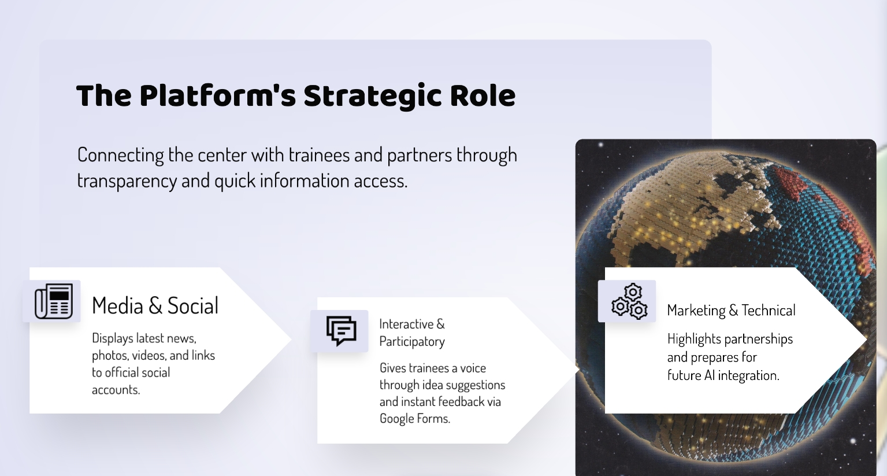
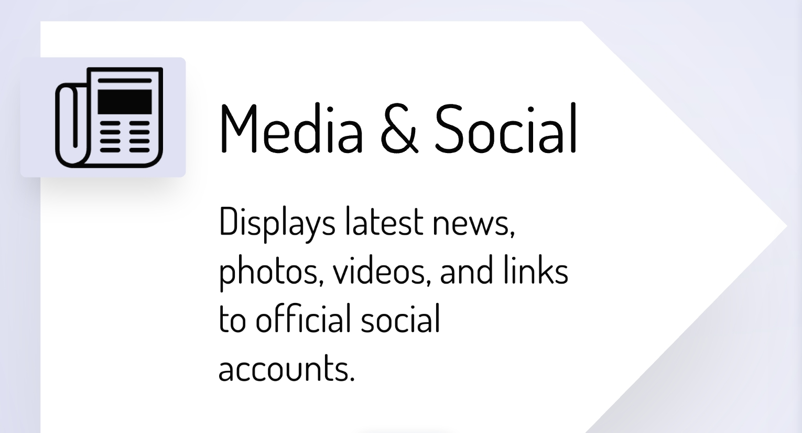
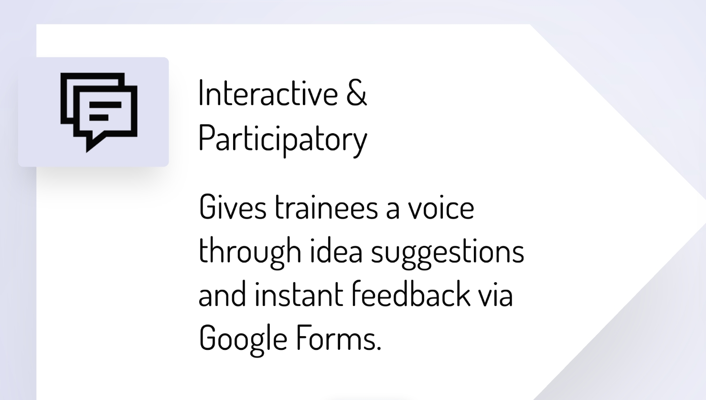
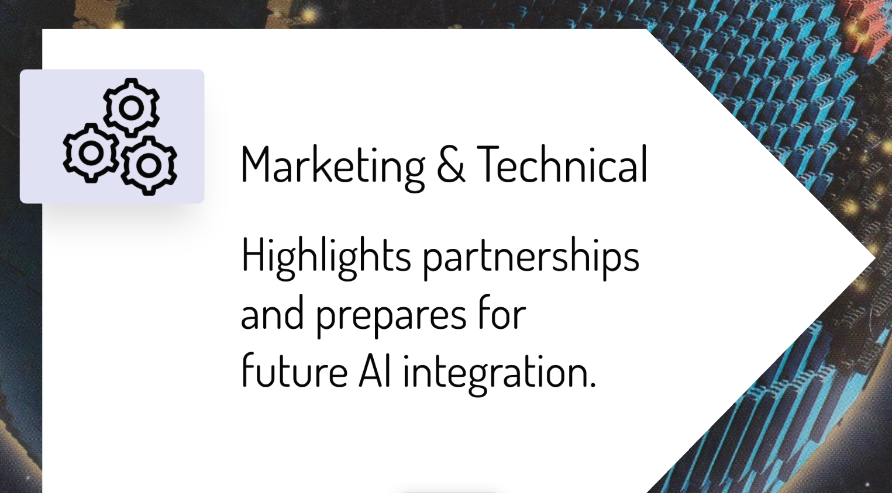
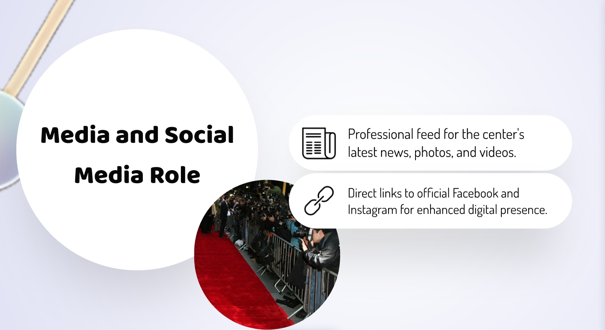
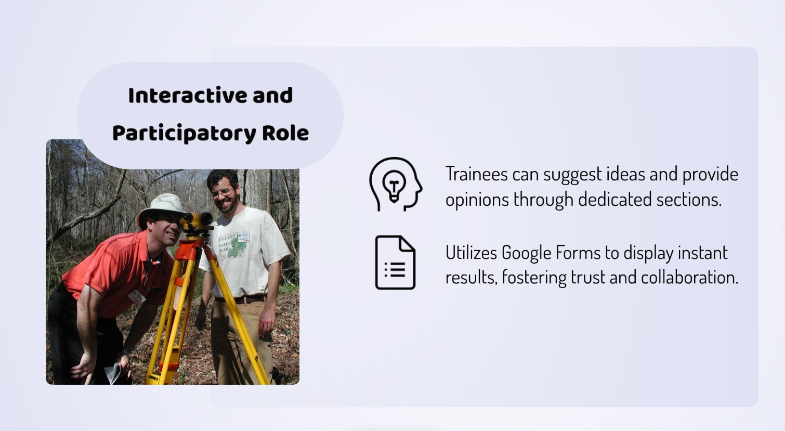
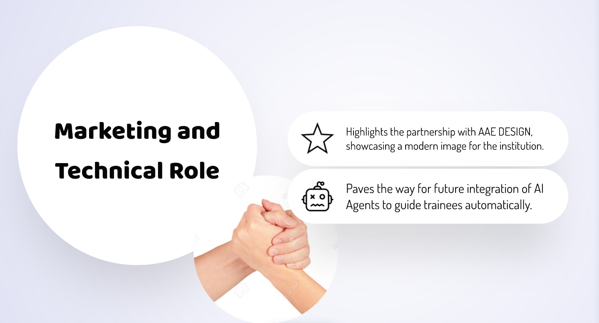
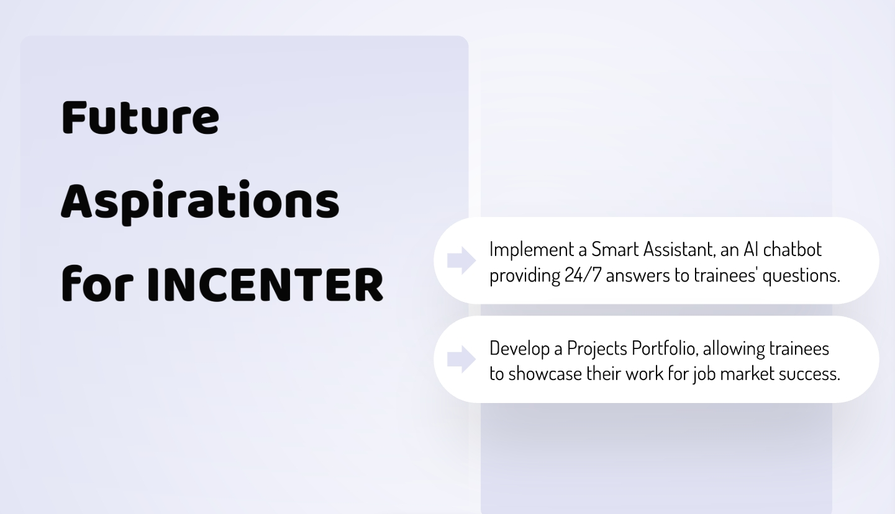